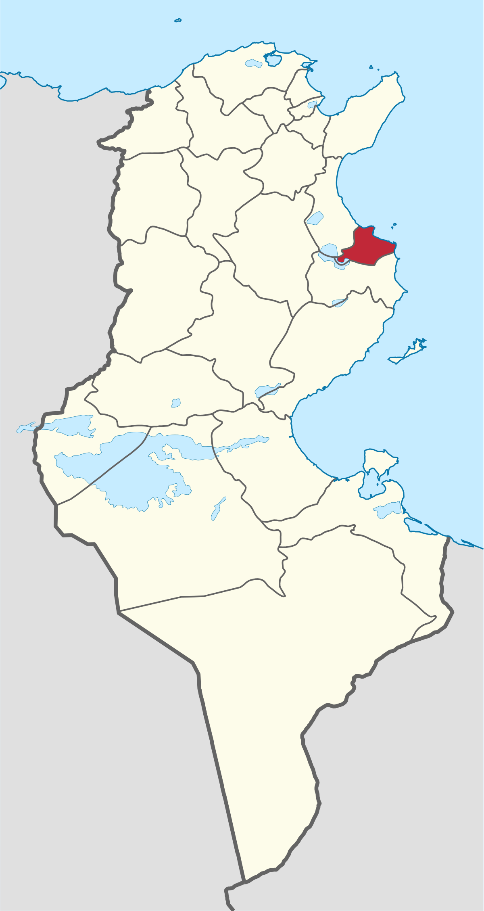
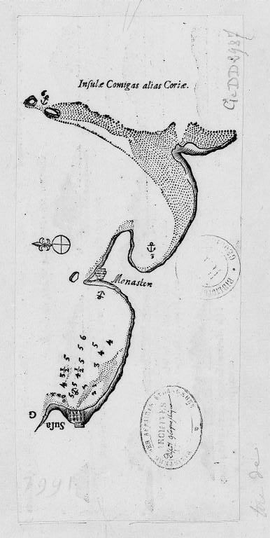
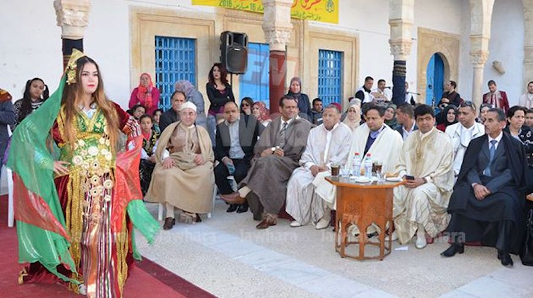
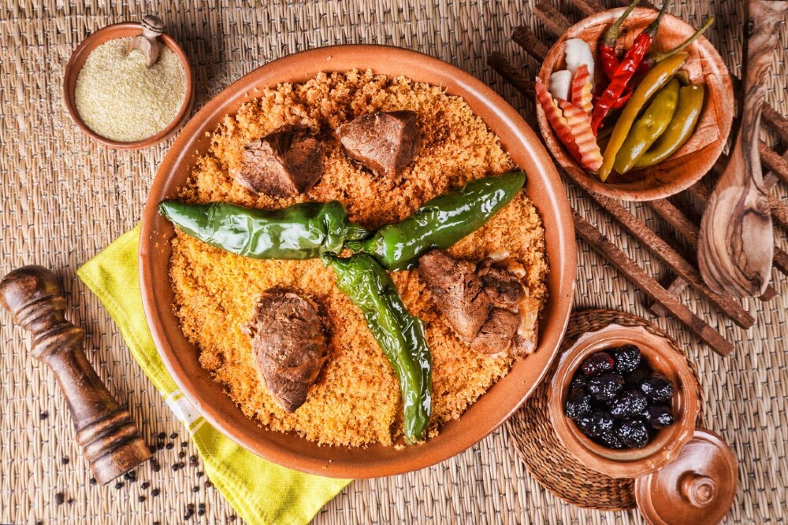
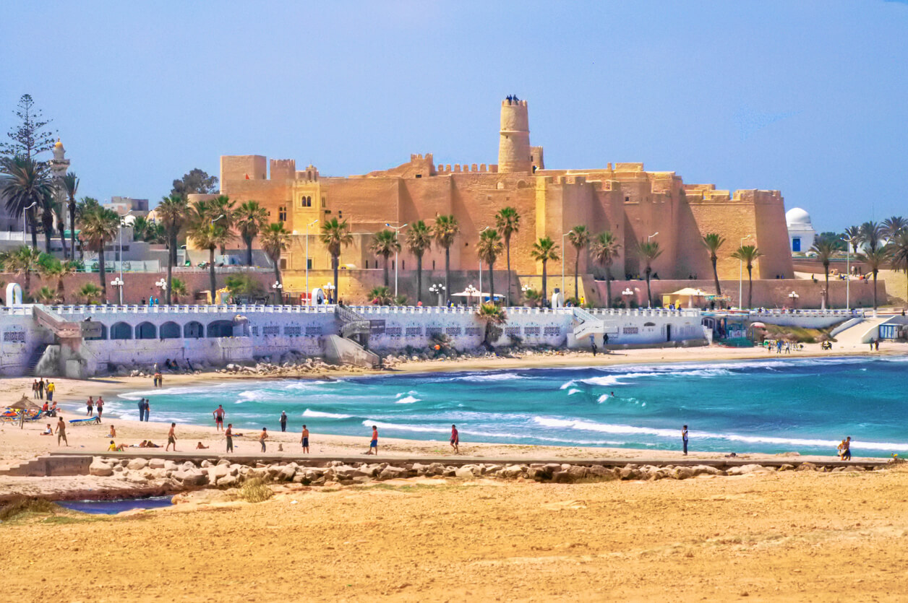
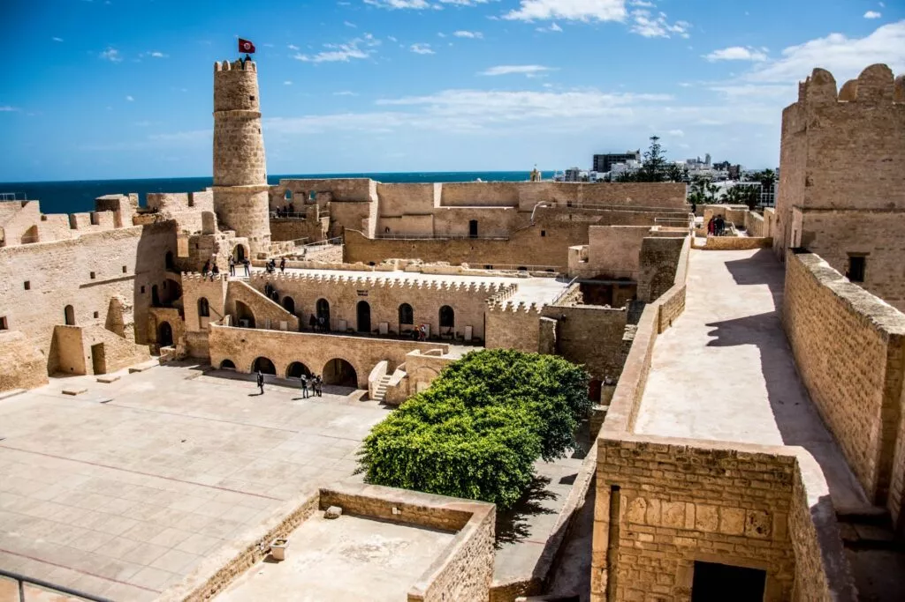

Monastir
Monastir est une ville côtière du Sahel tunisien, au centre-est de la Tunisie, située sur une presqu'île au sud-est du golfe d'Hammamet, à une vingtaine de kilomètres à l'est de Sousse et à 162 kilomètres au sud de Tunis. La ville est le chef-lieu du gouvernorat du même nom depuis 1974.
Le Ribat de Monastir
Mausolée de Habib Bourguiba
Palais Présidentiel de Bourguiba
Mausolée Habib Bourguiba
Quelques chiffres
Superficie
1 019 km²
Nombre de maisons
72 000
Habitants
104 535
Localisation
Monastir est une presqu'île entourée par la mer Méditerranée sur trois côtés et formant, vers le sud, le golfe du même nom, qui s'étend jusqu'au cap de Ras Dimass. Elle offre des paysages diversifiés, notamment ses plages sableuses et rocheuses ainsi qu'une falaise s'étendant sur près de six kilomètres.

Histoire
Monastir, c’est aussi l’histoire d’une ville qui s’étend sur plus de dix siècles. En effet, la ville fait partie, avec Sousse et Kairouan, des toutes premières villes arabes fondées en Ifriqiya. Elle est bâtie sur les ruines de l'ancienne ville punico-romaine de Ruspina. La ville de Monastir est connue pour son Ribat, entre autres choses, qui fut érigé par le wali Harthama Ibn Ayoun sur ordre du calife abbasside Haroun ar-Rachid en 796 comme moyen de défense contre les attaques de la flotte byzantine en Méditerranée. Il représente, avec le Ribat de Sousse, l'une des deux forteresses les plus importantes de la côte du Sahel.

Culture

hover me
hover me
hover me
hover me